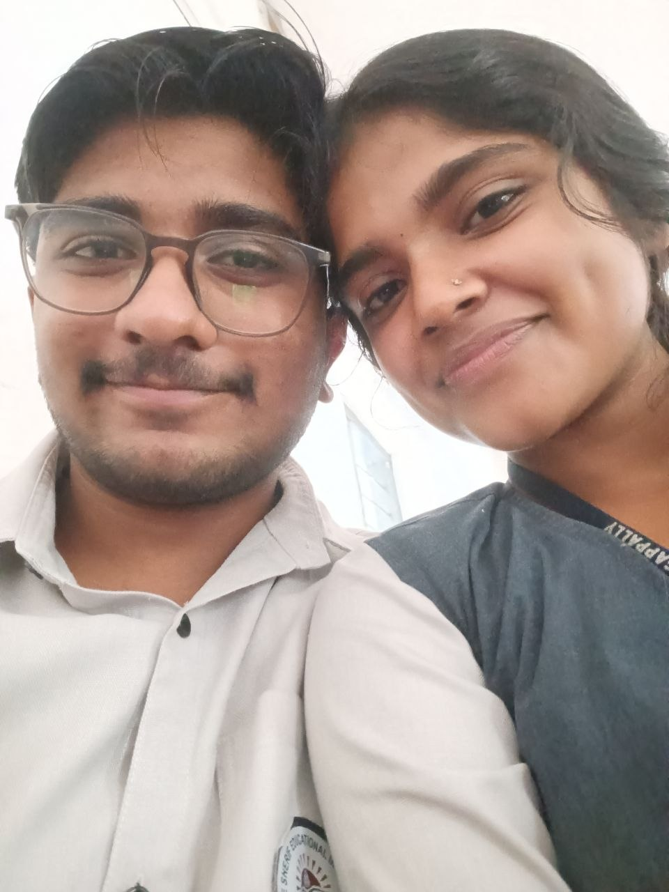
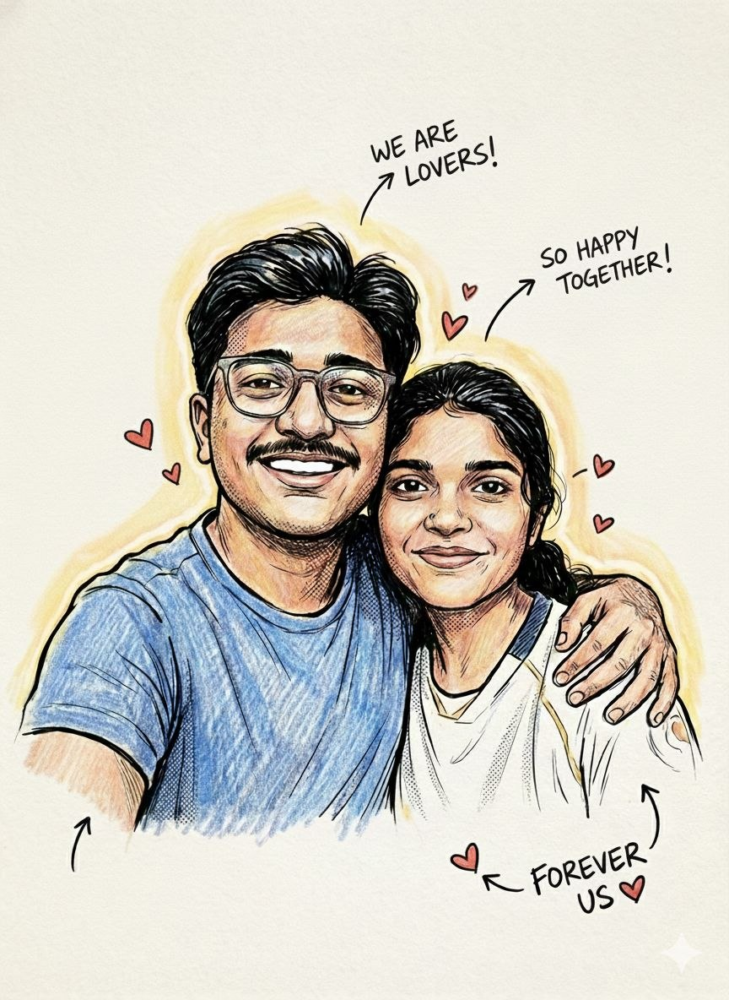

It started small…
just moments… that somehow became everything.
This isn’t just a site… it’s us.
just moments… that somehow became everything.
you felt like home here

just us. that’s enough

i’m keeping this forever btw
Vavee..... i don’t think i say this enough… or maybe i just don’t say it the right way. but somewhere between all our random moments, the small talks, the silence, the laughs that didn’t make sense to anyone else… you became something i can’t explain simply. you became my safe place. not in a loud, dramatic way… but in the calmest way possible. like a place i didn’t know i needed until i found it in you. there are so many moments with you that seem small from the outside… just pictures, just days, just time passing. but for me, they hold everything. they hold versions of me that felt lighter, happier… more alive. you made ordinary days feel like something i’d want to remember. you made silence feel comfortable. you made me feel… seen, without trying too hard. and that’s rare. sometimes i go back to these memories and just sit there for a second… not because i’m stuck in the past, but because those moments meant that much to me. they still do. i don’t know what the future looks like, and i won’t pretend i do. but i know this — what we have, what we’ve built through all these little moments… it’s real to me. and no matter where life takes us, no matter how much things change… there will always be a part of me that quietly carries you with it. not loudly. not dramatically. just… gently. always. — yours Shawn